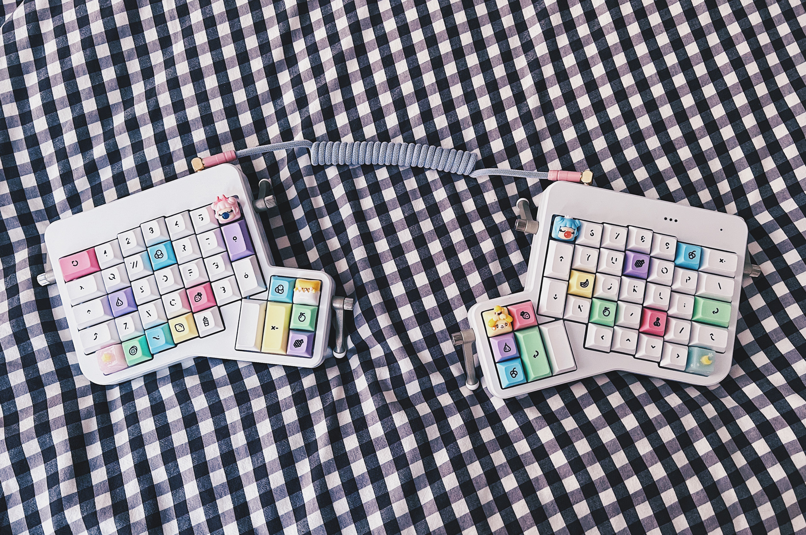

hana.ninja 🥷 / keyboards
I got really into building custom mechanical keyboards during the pandemic. It is just so satisfying to build and design a custom keyboard that meets my specific needs. Feel free to reach out to me on social media if you are a fellow mech keeb fan and/or if you are looking to get started in the hobby and have any questions!
Ergo
My first non-standard keyboard! I was really worried about learning how to type on an ortholinear layout (and there was absolutely a learning curve), but I've surprised myself with how quickly I was able to adapt to this keyboard. The keyboard's split design and ortholinear key layout is meant to promote a healthier, ergonomic posture. And it also means I now have room to place snacks squarely in front of me, in between the two halves. I've been using this keyboard for over a year now, and it has become my go-to keyboard for typing and designing.
Stats
- Ergodox EZ in White
- Kailh Polia Tactile Switches (Lubed with Krytox 205g0)
- Currently: Weirdo Milkshake (DSA Profile)
- Formerly: YMDK Sunset Gradient Keycaps (Cherry Profile)
Ergodox EZ with Weirdo Milkshake keycaps, designed by biip.
 Ergodox EZ with YMDK Sunset Gradient Keycaps, plus a few guest appearances by POM Jellys and Astrolokeys.
Ergodox EZ with YMDK Sunset Gradient Keycaps, plus a few guest appearances by POM Jellys and Astrolokeys.
 Under the hood are matching Kailh Polia Switches.
Under the hood are matching Kailh Polia Switches.
TKL (80%)
This was my first mechanical keyboard, and used to be my go-to keyboard for designing! TKL/80% keyboards give me the greatest access to the keys I need when I'm working. I have selected linear switches and keycaps that display alphas to help expedite my workflow. And if I need to build in macros/shortcuts to speed up certain actions to help me as I design, I have an ample amount of keys to choose from when programming those actions!
Stats
- Drop CTRL Keyboard with High Profile Lilac Aluminum Case
- Novelkey Cream Linear Switches (Lubed with Krytox 205g0)
- Milkshake and Astrolokey Keycaps
 Drop CTRL with (almost) Milkshake Keycaps. I have the real ones on my ergodox!
Drop CTRL with (almost) Milkshake Keycaps. I have the real ones on my ergodox!
 Drop CTRL with Astrolokey Keycaps.
Drop CTRL with Astrolokey Keycaps.
 Lilac coiled cable with pink aviator. Custom cable by Cookie Cable.
Lilac coiled cable with pink aviator. Custom cable by Cookie Cable.
65%
This keyboard is very lightweight (compared to my other keyboards), so it's great for taking into the office. The Boba U4 switches in this keyboard are silent tactiles, which make this keyboard super quiet! Great for using if I'm co-working with others so that I do not disturb them, while still enjoying the clackety-clack feeling. And the POM Jelly Keycaps feel really nice to touch and type with.
Stats
- TKC Portico
- Gazzew Boba U4 (Lubed with Krytox 205g0)
- POM Jelly Keycaps (White)

60%
I've now replaced this keyboard with my Portico, but this little 60% keyboard was great for extensive typing and that clean rainbow aesthetic!
Stats
- Drop Carina
- Drop Halo Tactile Switches (Lubed with Krytox 205g0)
- POM Jelly Keycaps (Rainbow)
 Drop Carina with POM Jelly Keycaps.
Drop Carina with POM Jelly Keycaps.
20% (Numpad)
Sometimes I need to input numbers in quickly while I'm designing, but my small desk means it's inconvenient for me to have a full 100% keyboard with a numberpad attached. That's where my handy little bluetooth 20% numpad comes in!
Stats
- GK21s Bluetooth Numpad with Purple Case
- Kailh Pro Purple Tactile Switches
- Astrolokey Keycaps
- Artisan Keycaps from PuggyCrafts @ Etsy
 GK21s Numpad with purple case using Astrolokey keycaps.
GK21s Numpad with purple case using Astrolokey keycaps.
Macropad
Copying and pasting has never been so easy (and so cute).
Stats
- Stack Overflow The Key V2 Macropad
- Kailh Polia Switches
- Astrolokey Keycaps
 The Key V2 macropad using Astrolokey keycaps.
The Key V2 macropad using Astrolokey keycaps.